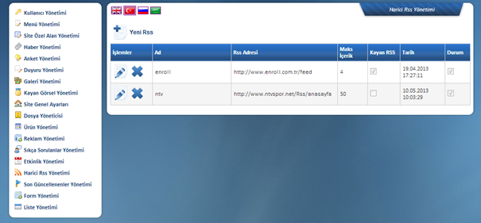

Bu alanda; üçüncü parti web sitelerinin RSS yayýnlarýný ve içeriðini web sitenizde istediðiniz bir alanda yayýnlayabilirsiniz. Örneðin Facebook sayfanýzda paylaþtýðýnýz içeriði sayfanýzýn RSS yayýný aracýlýðýyla ya da kurumsal olarak takip ettiðiniz sektörel bir sitenin haberlerini web sitenizde bu sistem aracýlýðýyla yayýnlayabilirsiniz.
Web sitenizin kendi RSS yayýnlarý ile ilgili bir iþlem bu alandan yapýlmamaktadýr.

Harici RSS yayýnlarý oluþtururken RSS yayýnýnýn adresini, istediðiniz baþlýðý ya da adýný ve RSS yayýný içinden kaç yeni içeriðin gösterilmesini sitediðinizi belirtmeniz gerekmektedir. Tanýmlamalarýný yaptýðýnýz bu yayýný daha sonra menü yönetiminde oluþturacaðýnýz ya da mevcut istediðiniz bir sayfanýn içinden çaðýrabilirsiniz.